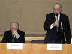
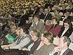

2 апреля 2001 г. в Москве открылся VIII Российский национальный конгресс «Человек и лекарство».
2 апреля 2001 г. в Москве открылся VIII Российский национальный конгресс «Человек и лекарство».
Конгресс проводится под эгидой Министерства здравоохранения РФ, Российской академии наук, Российской академии медицинских наук и Общероссийского общественного фонда «Здоровье человека».
На открытии Конгресса с пленарными докладами выступили Первый заместитель министра здравоохранения РФ А.И. Вялков («Система рационального использования лекарственных средств в России») и президент РАМН В.И. Покровский («Инфекционная патология: вчера, сегодня, завтра»).
Из 28 симпозиумов, состоявшихся 2 апреля 2001 г., несколько было посвящено вопросам антимикробной терапии. На симпозиуме «Современные возможности и перспективы лечения тяжелых инфекций» были затронуты проблемы лечения абдоминальных инфекций, инфекций в онкогематологии, состояние антибиотикорезистентности в России.
В первый день Школы для врачей по специальности фармакоэпидемиология и фармакоэкономика с лекцией на тему «Исследование потребления лекарственных средств: фармакоэпидемиологические исследования» выступил профессор Каролинского университета У. Бергман (Швеция).
Фотографии с конференции
(выберите нужную для просмотра увеличенного изображения):
У. Бергман |

Симпозиум |

Зал заседаний |
Выставка |